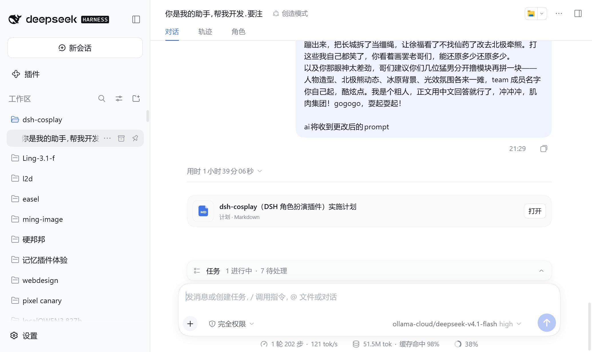
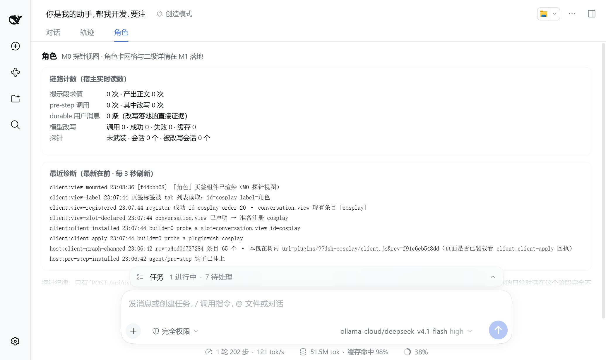

四条“只能靠实测确定”的机制已经全部钉死 —— 每条都有可读回执 + 源码坐标。 下面每条都请你给个判定；判完点右上「复制我的判定」把一行行结论发我，我据此进 M1。
（在下面对每条选择判定后，这里会自动生成可复制的一行行结论）
在 lab 剖面（0.1.7-rc.2，独立端口 31999，一个只含 base+web-app 的干净剖面）里实测：
页签条读作 对话 · 轨迹 · 角色，点进去就是我们的视图。截图取自真实浏览器（Agent Window）。


机制：ctx.slots.inject('conversation.view', () => ctx.slots.register({name,id,order,label}, View))， —— 关键疑问是「从根 fiber 注册一个 session 作用域的槽位到底行不行」。实测：行，不需要会话 fiber 那套绕法。
client:client-apply build=m0-probe-a plugin=dsh-cosplay client:view-slot-declared conversation.view 已声明 → 准备注册 cosplay client:view-registered register 成功 id=cosplay order=20 · conversation.view 现有条目 [cosplay] client:view-label 页签标签被 tab 列表读取：id=cosplay label=角色 client:view-mounted 「角色」页签组件已渲染（M0 探针视图）
产物侧证据：宿主把 client bundle 交给了页面 ——
inGraph=true url=plugins/??dsh-cosplay/client.js&rev=f91c6eb548dd，实际 GET 返回
200 text/javascript；bundle 开头是 window.__ModuleLoader__.load({ id: "dsh-cosplay", factory …。
机制：ctx.systemPrompt.section({name:'dsh-cosplay:persona', order: DEPLOYMENT_PERSONA_PREFIX+1, interpolate:false, text:(ctx)=>…})。
疑问是：text() 的装配上下文里有没有会话身份（决定“每个会话各自一张卡”能不能做）。实测：有，
agentId=session-…，且 scope=present、键为 [agent,scope,signal]。
host:prompt-section section=dsh-cosplay:persona order=1 agentId=session-85f772c1-… typeof=string scope=present keys=[agent,scope,signal]
顺带定下两条纪律：段名必须自起（复用 deployment:persona-prefix 会与官方注册撞名抛错）；
interpolate:false 是必须的 —— 卡片正文出现 {{…}} 时默认严格插值会抛错并让整次装配失败。
这是你选的路线（模型改写 + 每次发送自动改写）的立足点。机制：agent/pre-step 瀑布里调用
next() 保留动态上下文消息，再把 role==='user' 的消息正文替换掉。
实测链条（一个真实回合，探针会话，已归档）：
host:pre-step-message role=user source.kind=user blocks=text 文本=63字 step=1 host:pre-step-rewrite 命中探针标记 → 改写为 79 字（原 63 字） host:durable-user-message seq=9 id=cecdda8f-… 正文=79字 预览：[cosplay-probe] cosplay-probe-marker 请只回复一句话：… host:assistant-message seq=19 step=1 正文=191字 预览：`[cosplay-probe] cosplay-probe-marker` 请只回复一句话：… host:turn-end seq=21 fields=[reason,turn]
三条结论：① 人提交的消息 source.kind === 'user'（M1 的白名单按它定，绝不碰
system-reminder / skills / runtime-context 那些同样是 user 角色的系统消息）；
② 改写后的正文被 durable 写成 user/message，且沿用原 message id（幂等键成立）；
③ 模型真的收到了改写后的文本（它把它原样复述了出来），回合正常收尾没被打断。
含义：以后「对话」里那条用户消息本身就是改写后的 prompt —— 模型收到的与日志逐字一致， 不需要另做一层“实际发送了什么”的黑箱展示。
>=0.1.7-rc.1 <0.3。tsc --noEmit 零错误；客户端 bundle 只 require [react, react/jsx-runtime]（全在运行时 seed 的 9 个平台模块里）。scripts/check-client-purity.mjs）通过，并把「除平台模块外一律内联」变成会失败的门禁。ctx.llm.stream）、页签里的网格/二级详情 —— 全部是 M1。按已批准的方案推进，两个链路都做，卡里可选：
dsh-cosplay:persona 段，按会话取卡，长度上限保护上下文。agent/pre-step 里用 ctx.llm.stream（当前默认模型）按卡片规则改写；超时/失败一律回落原文并留痕；按 message.id 幂等不重复计费。<DSH_HOME>/cosplay/（library.json + art/ 按 sha256 去重 + state.json），单文件包 cosplay-*.json（立绘内联 base64）导入导出，原子写 + .bak + 坏库隔离。